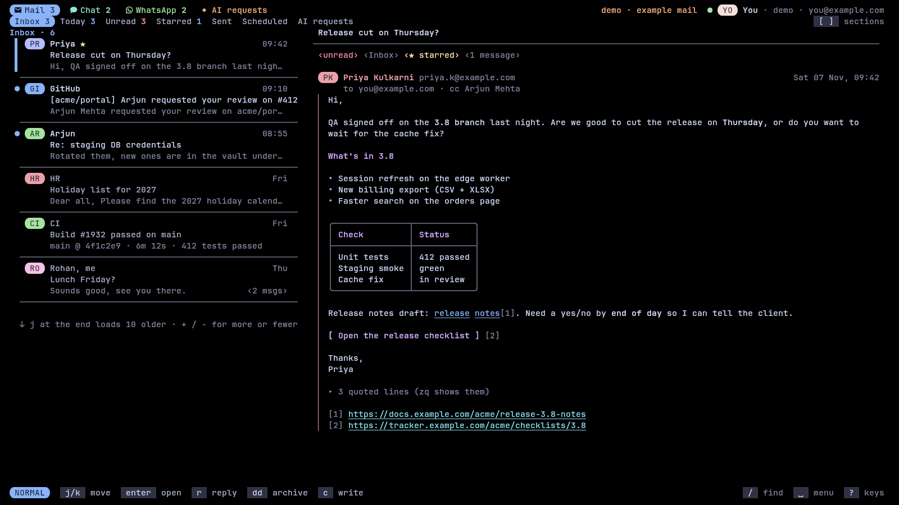
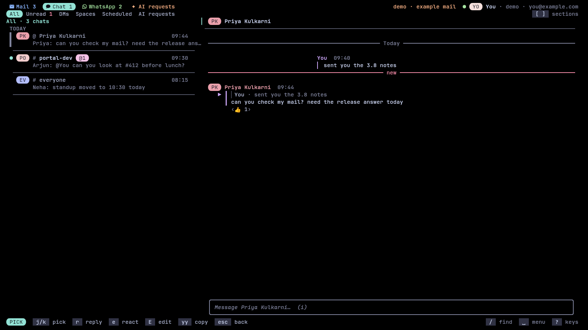
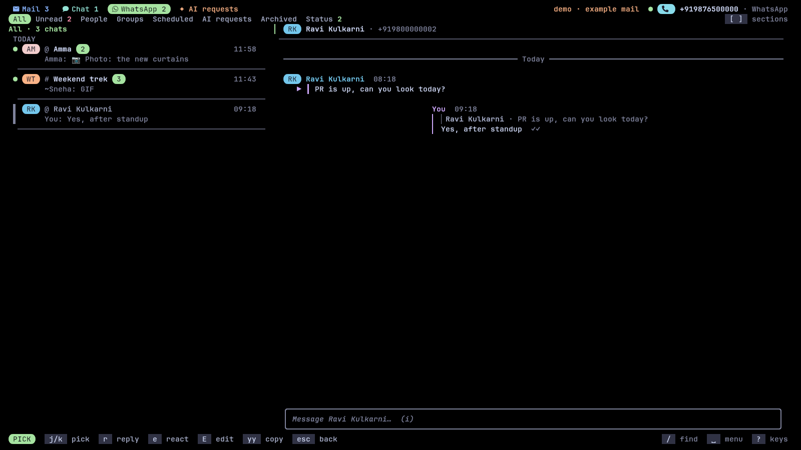
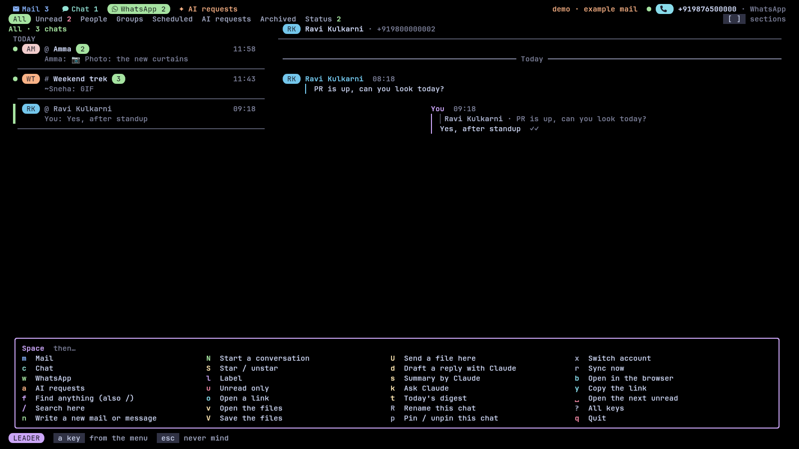

Narada (नारद) is the divine messenger of Hindu tradition, who carries word between the worlds.
Checking mail and Google Chat usually means a browser tab: a context switch, a mouse, and a page that pulls you into everything else. narada keeps a local copy of both, puts the unread counts in your tmux status line and opens the full screen with prefix e, laid out like sangam. It runs like lazygit: type narada in any terminal. And because it ships an MCP server, you can tell Claude "read today's mails" or "mail Priya that Thursday is fine".
#Features
- Mail and chat in one place: Gmail threads and Google Chat spaces and DMs, one
Tabapart. - Sections, like saved searches: Inbox, Today, Unread, Starred, or any Gmail search (
from:priya newer_than:7d). Switch withh/l; each tab shows its unread count. Search withs, keep it as a section withW. - Opens instantly, works offline: a background service keeps a local copy in sync (Gmail's change feed every minute, chat every 30 seconds), so nothing waits on Google. Reading, filtering and local search work without a network.
- Write in your editor: compose, reply, reply all and forward open
$EDITORwith a header block; save and quit to review, then send. - Undo: archive, trash, read and star are undone with
u; every send waits 10 seconds first, soucancels that too. - Claude can use it: list, search, read, archive and draft mail, read and post in chat, through an MCP server and a
--jsonCLI. In the screen,@asks Claude,Ssummarises,Ddrafts a reply,Tgives today's digest. - Nothing goes out without you: an agent's send waits for your
yin a popup (the same idea as dvarapala for root commands). - Notifications: new inbox mail and chat DMs or mentions, through
notify-send. - WhatsApp too: link it like WhatsApp Web (scan a QR code) and your chats get a third tab, a status-line count and agent tools. See WhatsApp for what that means for your account.
- Several accounts: work and personal side by side;
Space xfocuses on one. - Safe with your login: Google's own sign-in in your browser; tokens live in the system keyring and are never printed.
- Vim keys throughout, no arrows needed.
#Install
Requirements: Linux, a Google account (Google Chat needs a Google Workspace account; a personal Gmail gets mail only). Optional: tmux for the popup and status line, secret-tool (libsecret) for the keyring, notify-send for notifications, ffmpeg for GIFs and video previews on WhatsApp, fzf for the label picker, wl-copy or xclip for copying links, Claude Code for the AI keys.
With kosha:
kosha install naradaOr with the installer, which downloads the release binary into ~/.local/share/narada (or builds it with Go) and links ~/.local/bin/narada:
curl -fsSL https://raw.githubusercontent.com/Theyashsawarkar/narada/main/install.sh | bashOr from source (Go 1.26+):
git clone https://github.com/Theyashsawarkar/narada && cd narada
make && sudo make install # or: make install PREFIX=~/.localArch: cd packaging/arch && makepkg -si.
Update by running the installer again; install.sh --uninstall removes it.
#Getting started
Try it first on made-up mail, no Google needed:
narada demoThen just run narada (or press prefix e in tmux). With no credentials yet it opens a setup screen in three steps. 1, the OAuth client: it asks where your client file is (Tab completes the path, Enter on a folder opens it), checks it, and copies it into ~/.config/narada/client.json, so the download can be deleted; a pasted JSON or a typed client ID and secret work too. 2, sign in: Enter opens Google's sign-in in your browser (Tab switches between a work account and a personal Gmail). 3, the first sync, with a progress bar, and then the inbox.
| Key | Setup screen |
|---|---|
Tab | Switch to the next path completion (Enter on a folder opens it) |
Enter | Save the OAuth client file at this path, or start the Google sign-in |
Ctrl+t | Enter the OAuth client ID and secret by hand instead |
Ctrl+o | Open the Google Cloud console credentials page |
Ctrl+g | Show the steps for creating the OAuth client |
Ctrl+d | Start the demo on example mail instead |
n | Rename the account before signing in |
c | Pick a different OAuth client file |
y | Copy the sign-in link |
To use your own mail, narada needs an OAuth client of your own (Google doesn't hand out one for everyone's terminal tools). This takes about five minutes, once:
- Open the Google Cloud console, create a project (any name), and enable the Gmail API, the Google Chat API and the People API (APIs & Services → Library).
- OAuth consent screen: for a Workspace account choose Internal (no Google review needed; your admin may have to allow it). For a personal Gmail choose External, add yourself as a test user, then Publish it, or Google signs you out every 7 days.
- Google Chat API → Configuration: fill in an app name, an avatar URL and a description, and turn off "interactive features". Chat's API wants this even though narada only acts as you.
- Credentials → Create credentials → OAuth client ID → Desktop app, and download the JSON.
Then either run narada and follow the setup screen, or do the same from the command line:
narada auth setup ~/Downloads/client_secret_*.json
narada auth add work # opens Google's sign-in page
narada auth add personal --no-chat # a personal Gmail: mail only
narada service install # background sync and notifications
claude mcp add --scope user narada -- narada mcp
narada doctor # checks all of itnarada opens the screen.
#The screen


All screenshots use narada demo: made-up mail, chats and people.
On top, the places: Mail (blue), Chat (teal), WhatsApp (green) and the AI requests (peach), each with its count, and you on the right, by name (your WhatsApp name, your Google name, else the address or number). Under them the place's sections in one strip (Inbox, Unread, Sent… or All, Unread, People, Groups, Scheduled, Archived, Status), counts coloured by what they count. Then the list on the left, what's open on the right, and the mode and the keys that matter now at the bottom. Below 100 columns the list and what's open take turns: Enter opens, h or Esc goes back.
Colour always means something, and always comes with a shape or a word: each person has their own colour (avatar, name, the bar by their messages), yours is mauve, mentions are pink with an @, files yellow with 📎, links sky blue and underlined, unread bold with a dot or a count, "new" red. All of it follows varna's theme (~/.local/state/varna/palette.json), every colour of it, and recolours live when the theme changes.
- Mail list: rows on one panel, divided by hairlines: who and when, the subject, the start of the last message, chips for the message count and labels. Unread has a
●, the picked row a bar in the place's colour. - Thread: the subject on top, then each message under its sender, the body beside a bar in the sender's colour. HTML mail is turned into terminal formatting: headings, bold and italics, lists, real tables (long cells wrap inside the grid), buttons, and numbered links (
gxand a number opens one). Layout tables and hidden preview text are dropped;bopens the thread in Gmail for the sender's full layout. Older messages fold to one line (zaopens them all), quoted replies fold away (zq). - Chat and WhatsApp: messages grouped by sender under their name and time, each beside a bar in their colour; yours indented with a mauve bar and your ticks. Google Chat's formatting shows as sent: bullets, bold, italics, strikes,
code, quotes. Nothing is ever drawn to the right of a message, so text a terminal measures differently (Hindi, Marathi) can't push a frame out of line (see Troubleshooting). - AI requests: an agent's sends wait in the AI requests (
4, or the section of each place);y,eornanswer the one you picked, on a card showing exactly what would go out.
#Keys
narada works like Vim. NORMAL mode moves and acts; i writes (INSERT, Esc back); v picks a range (VISUAL); : runs a command; and Space is the leader: press it and wait, and a menu of everything else appears (typed straight on, it never shows). Keys can come in twos: gg, dd, yy, za, gf. / finds anything (an action, a chat, a person, a message or a mail) and shows the key for each, and ? lists every key.

Move
| Key | Does |
|---|---|
j / k | Move to the next / previous thread or chat (j at the end loads older mail) |
gg / G | Jump to the first / last thread, chat or message |
Ctrl+d / Ctrl+u | Scroll what's open half a page down / up |
J / K | Scroll what's open a line down / up |
h / l | Move to the list / to what's open |
Enter | Open the thread or chat (marks it read) |
q / Esc | Go back, then quit |
[ / ] | Switch to the previous / next section (Unread, Groups, Sent…) |
1 / 2 / 3 / 4 | Go to Mail / Chat / WhatsApp / the AI requests |
gt / gT | Go to the next / previous place |
Tab / Shift+Tab | Go to the next / previous of Mail, Chat and WhatsApp |
Ctrl+n / Ctrl+p | Switch to the next / previous chat, staying in the conversation |
n / N | Jump to the next / previous unread thread or chat |
/ | Search everything: actions, chats, people, messages and mail (Gmail's search words work) |
+ / - | Set how many older mails j at the end loads (10, 25, 50, 100) |
W | Save the current search as a section |
X | Remove the current saved-search section |
Act
| Key | Does |
|---|---|
i / a | Start writing a message in the chat (a in mail: reply to everyone) |
r | Send a reply (in chat: to the picked message, quoting it) |
R | Send a reply to everyone on the thread (reply all; WhatsApp group: privately) |
f | Send the thread or the picked WhatsApp message on to someone (forward) |
c | Create a new mail, or a message in this chat (compose) |
dd | Move the thread or WhatsApp chat out of the inbox (archive; picking: delete yours, dd twice) |
# | Move the thread to the trash |
u | Undo the last change, or cancel a send in its undo window |
m / M | Set it as read / unread (or everything picked) |
* | Toggle the star on the thread or picked message |
L | Add or remove a label |
v | Pick several (VISUAL): j/k grow it, then dd, m, M, * or y act on all |
V | Pick the whole list (again clears) |
Alt+r | Set everything in this list as read |
yy / Y | Copy the picked message / the link to the thread or chat |
gf / gF | Open / save the attachments (kept in ~/Downloads/narada) |
gx / o | Open a link from what's open, by its number |
za | Toggle every message in the thread open / folded |
zq | Toggle the quoted text in the thread |
b | Open the thread or chat in the browser |
U | Send a file into this chat |
t | Move a scheduled send to another time (in Scheduled) |
p | Toggle the chat pinned on top (WhatsApp: on your phone too) |
Enter (picking) | Jump to the message a reply quotes; on a photo, view it full size |
Backspace (picking) | Jump back to the reply you came from |
e (picking) | Toggle a reaction on the picked message, or send one to a status (to whoever posted it) |
r (picking a status) | Send a reply to a WhatsApp status (in your chat with whoever posted it, quoting it) |
E (picking) | Edit your picked message (WhatsApp: within 15 minutes) |
P (picking a poll) | Set your vote in the picked WhatsApp poll |
Z (WhatsApp) | Set the chat muted for 8 hours (again: a week, then always, then unmuted) |
X (WhatsApp) | Set the chat's messages to disappear after 24 hours (again: 7 days, 90 days, off) |
I (WhatsApp group) | Show the group's people, admins and description |
B (WhatsApp) | Set the person in this chat as blocked (B twice; again unblocks) |
L (WhatsApp, not linked) | Connect this machine to WhatsApp with a QR code (link) |
P (WhatsApp, not linked) | Connect this machine to WhatsApp with your phone number and a code (link) |
Space, the leader
| Key | Does |
|---|---|
Space m / c / w / a | Go to Mail / Chat / WhatsApp / the AI requests |
Space f | Search everything (the same as /) |
Space / | Search only here: this section or this chat |
Space n | Create a new mail or message |
Space N | Start a conversation with someone |
Space S | Toggle the star |
Space l | Add or remove a label |
Space u | Show only the unread |
Space o | Open a link |
Space v / V | Open / save the attachments |
Space U | Send a file into this chat |
Space R | Rename the chat (spaces and groups for everyone) |
Space p | Toggle the chat pinned |
Space x | Switch account (all, then each) |
Space r | Reload mail and chat from Google now (sync) |
Space b / y | Open in the browser / copy the link |
Space Space | Open the next unread |
Space ? | Show every key |
Space q | Quit narada |
Claude
| Key | Does |
|---|---|
Space k / @ | Start a question to Claude, with this thread or chat as context |
Space s | Show Claude's summary of the thread or the chat's recent messages |
Space d | Create a reply draft with Claude, then edit it in your editor |
Space t | Show today's digest: what came in and what needs you |
Other
| Key | Does |
|---|---|
: | Run a command: archive, trash, read, unread, star, label, later, mute, rename, account, sync, q (Tab completes) |
? | Show every key |
Writing (INSERT, in the message box)
| Key | Does |
|---|---|
Esc | Go back to NORMAL mode (what you wrote stays) |
Enter | Send the message and keep writing the next one |
Alt+Enter / Ctrl+j | Start a new line in the message |
Ctrl+o | Add a file to the message |
Ctrl+v | Paste a copied image (a screenshot) into the message |
Ctrl+t | Send the message later (tomorrow 9am, fri 6pm, in 2h) |
Ctrl+r (WhatsApp) | Record a voice note (again stops and adds it; Enter sends it, Esc drops it) |
Ctrl+p (WhatsApp) | Send what you wrote as a poll: the question, then one option per line |
@ (WhatsApp) | Pick someone to tag from the list (Up/Down, Enter or Tab; Esc for none) |
←→ Alt+b/f Ctrl+a/e | Move the cursor by letter, word, line start / end |
Ctrl+w / Ctrl+k / Ctrl+u | Delete the word before the cursor / to the end / the whole message |
Keys (?): a window in the middle of the screen with every key, grouped, and a filter: type send and only the keys that send stay.
Picking files (Ctrl+o in a mail, + when reviewing, U in chat): a window listing the files under the folder you're in (Ctrl+r switches to home or Downloads, Ctrl+h shows hidden ones). Type to narrow it down; the right side previews the highlighted file: text with line numbers, an image's size (the picture itself with chafa installed), a PDF's first page (with pdftotext). Tab picks several, Enter adds them.
The conversation: their messages under their name and time, each beside a bar in their colour; yours indented, beside a mauve bar, with your ticks (blue once read). The time follows a message's last line, or gets a line of its own when the line holds text a terminal measures differently. A reply's quote sits above it, files (gf opens one) and numbered links (gx) with it, reactions as chips underneath and "(edited)" where a message changed. The picked message has a heavy bar and a ▶.
The lists (mail, chat, WhatsApp) are rows on one panel, divided by hairlines, the picked one marked by a bar in the place's colour; list_style = "cards" draws a box around each instead. In a mail thread read messages fold to one line each, and a run of four or more to a single "⋯ N earlier messages" line (Enter opens them all). The message box holds what you're replying to and the files you're sending inside its frame, above the text. A red new line marks where what you haven't read starts, and the chat opens there. The top line lists who's in it. The chat list is grouped (pinned, today, earlier); a chat that mentions you shows a pink @N badge.
Replying to a message in chat: Enter (or l) on a chat moves into the conversation; j / k now pick a message (highlighted) instead of scrolling. r replies to the picked one: the message box shows "↩ replying to …", and the reply quotes it the way Google Chat's own reply does, right in the conversation. From the list, r replies to the latest message from someone else. Enter on a reply jumps to the message it quotes (fetching earlier messages if it's older than what's shown); on a reply to a reply, Enter again keeps going back; Backspace retraces the way you came. Replies others send that quote a message show the quote above them (❝ You: …).
Starting a conversation (Space N): type a name and pick the person (people from chat, contacts from mail, and your Workspace directory); Tab adds another for a group. With two or more, Enter first asks for a name: with one the group is a named space everyone sees, without one a group chat (name it later with Space R). If your sign-in predates the permission starting chats needs, the window says so and Enter signs you in again in the browser, then carries on. narada opens the DM you already have with them, fetching the earlier messages if this machine hasn't seen them, or starts a new one, and puts you in the message box. The search (/) finds conversations and people by name too, not just words in messages: Enter on a person opens your conversation with them. Claude can do the same: chat_send takes to (email addresses) instead of a space.
Renaming a chat (Space R): a space is renamed on Google Chat, so everyone sees the new name; a group chat gets its name on Google Chat too (that makes it a space, with the same people and messages) (Google lets only its managers do it; narada asks for the permission when you sign in, so an older sign-in needs narada auth add <account> once). DMs and unnamed group chats can't be named on Google; the name you give them stays on this machine. An empty name goes back to the default.
Searching (/): a floating window that looks everywhere: all mail, or every chat, and narada's own actions (type archive or reply and the action is there with its key; Enter does it). Space / looks only where you are: in a mail section that section (Today: today's mail, Sent: what you sent); in chat, the chat you're on. Tab switches between the two. Results from this machine show a moment after you stop typing, matches highlighted, with a preview; then Gmail's own search adds what isn't here yet (☁). Gmail syntax works: from:priya has:attachment newer_than:7d. Nothing waits on it: you can keep typing, move or close the window while it looks. Enter opens a result (a chat at that message).
| Key | Search |
|---|---|
Up / Down | Move between the results (Ctrl+p / Ctrl+n too) |
Enter | Open the result, or do the action |
Tab | Switch where it looks: here, or everywhere |
Ctrl+u | Clear the search |
Esc | Close the search |
Writing a mail (c, r, R, f, or Space d): a new mail takes the whole screen; a reply keeps the message you're answering on the left (PgUp/PgDn scrolls it) and your reply on the right. Type a name or part of an address in To and your contacts appear, best first (people you write to most, then people who write to you, and colleagues from your Google Workspace directory, which needs the People API enabled in your Cloud project); the typed letters are highlighted. Recipients become pills; a peach one says first time for someone you've never written to. Cc and Bcc stay hidden until Ctrl+b (a reply-all shows them). Your Gmail signature is added under the body (Ctrl+g leaves it out), a reply's original stays folded under it, and the draft is saved on disk every few seconds: if the popup closes, the same c or r picks it up again. Prefer your editor? Ctrl+e takes the whole mail there and back, or set compose = "editor".
| Key | Compose |
|---|---|
Tab / Shift+Tab | Move to the next / previous field (Tab adds what you typed first) |
Up / Down | Pick a contact from the suggestions |
Enter / , | Add the picked contact or typed address, and stay for more |
Backspace | Remove the last recipient (in an empty To, Cc or Bcc) |
Ctrl+s | Send the mail (after the undo window) |
Ctrl+t | Send the mail later (pick or type when: tomorrow 9am, fri 6pm, in 2h) |
Ctrl+d | Save the mail as a Gmail draft and close it |
Ctrl+o | Add files to the mail (x removes one in Files) |
Ctrl+e | Edit the whole mail in your editor, then come back |
Ctrl+q | Toggle the quoted text under a reply or forward |
Left / Right | Select a recipient pill (in an empty To, Cc or Bcc; Backspace removes it) |
Ctrl+b | Toggle the Cc and Bcc fields |
Ctrl+g | Toggle your Gmail signature under the mail |
Ctrl+f | Switch the account the mail is sent from |
PgUp / PgDn | Scroll the message you're replying to |
Esc | Cancel the mail (twice once something is written) |
Reviewing your message (chat written in the editor, or mail with compose = "editor") and approving an agent's (4, or the popup):
| Key | Review | Approve |
|---|---|---|
y | Send the message you wrote (after the undo window) | Send the message an agent wrote (after the undo window) |
t | Send the message later (pick or type when) | |
e | Edit the message again in your editor | Edit the agent's message in your editor first |
+ | Add a file to the message | |
- | Remove the last file added to the message | |
d | Save the message as a Gmail draft instead of sending | |
n | Delete the message you wrote (discard) | Cancel the agent's message (decline; nothing is sent) |
u | Undo your edit of the agent's message | |
s | Move to the next message waiting (leaves this one waiting) | |
J / K | Scroll the details of the agent's message | |
q | Leave the agent's message waiting and go back |
| d | | Toggle the changes marked in your edit of the agent's message |
Enter never answers on the approve screen, and for the first moment after the popup opens y and n do nothing, so what you were typing can't answer it.
#Sending later
Ctrl+t in a mail, t on the review screen, or Ctrl+t while typing a chat message (i) asks when: pick one (in an hour, this evening, tomorrow morning or afternoon, Monday morning) or type it the way you'd say it: tomorrow 9am, fri 6pm, in 2h, 3 nov 10:30, 03/11 9am, 2026-12-01 18:00. It shows what it understood before you confirm. The message waits in narada's outbox and the background service sends it then (Gmail's API has no scheduled send of its own), so this computer must be on at that time: if it wasn't, the message goes out as soon as it is, and a notification says it went out late. Scheduled mail is listed in its own Scheduled tab (next to Sent) and scheduled chat messages in the chat's Scheduled tab, soonest first, with their time: t moves one, Enter edits it, u cancels it. From the shell: --at "tomorrow 9am" on mail send and chat send; narada outbox reschedule <id> <when>. Agents can schedule too (send_at), still after your approval.
#Sent mail
The Sent section (next to Starred) lists mail you sent with who it went to (→ Priya, Arjun) and whether they answered: ↩ Priya replied 09:58 or no reply yet · 2d. Mail still in the outbox sits on top: sending in 7s (u cancels), an agent's waiting for your OK (4), or failed in red (R sends it again). Scheduled mail has its own tab, Scheduled.
#Older mail
The first sync is quick: the last initial_days (30) of mail, at most max_threads. Older mail stays on Gmail until you want it: press j at the end of a list and the next 10 older threads of that section come in (+ / - make it 25, 50 or 100; older_page sets the default), or search (/) and Gmail finds it wherever it is. Want everything here anyway? keep = "all" (or "1y", "6m") downloads older mail in the background, ~150 threads a minute, with a progress bar in the top bar.
#Files
- Open and download:
gfopens a mail's attachments or a chat's files in the app your desktop uses for them (they're kept in~/Downloads/narada;NARADA_DOWNLOADSmoves it); with several, a picker opens (Tab picks more, Ctrl+a all).gFonly saves them. It never overwrites: a second copy isname (2).ext. Chat files kept in Drive open in the browser instead (b). From the shell:narada mail save THREAD [N|all],narada chat save MESSAGE [N|all],narada whatsapp save MESSAGE [N|all]. - Upload: in the mail editor,
Attach: ~/report.pdf, ~/notes.txt; or+on the review screen to pick files. In chat,Upicks files to post in the space. From the shell:--attach FILE(repeatable) onmail sendandchat send, and onwhatsapp send. Up to 25 MB per mail or chat message; WhatsApp takes files up to 2 GB, as WhatsApp itself does. - What is attached is copied when you queue the send (privately, 0600), so the file you reviewed is the file that goes out. Agents can attach files too, but those sends wait for your approval unless
send_policyistrust, and the approval shows each file and where it came from. Agents save downloads only inside the downloads folder.
narada links to your WhatsApp the way WhatsApp Web does: as a linked device of your phone's account. Open the WhatsApp tab (Tab twice) and press L: the QR code shows right there; scan it from WhatsApp → Settings → Linked devices. P links with your phone number instead (you type a code on the phone). A progress bar follows while the phone sends your recent chats. From a terminal it's the same:
narada whatsapp link # scan the QR code
narada whatsapp link --phone +9198… # or type a code on the phone insteadKeep it open after scanning: it waits until the phone has logged the new device in and sent your recent chats (up to two minutes), then hands over to the background service. Tab in the screen now goes Mail → Chat → WhatsApp, with sections All, Unread, People, Groups, Scheduled, Archived and Status; i types a message, r on a picked message replies quoting it, e reacts to it (one reaction each, as on the phone: another replaces yours, picking yours again takes it back, and other people's show under their messages), @ while typing lists who you can tag (a group's members and whoever has written there; type to narrow it) and tags show as names: the name you saved, else the name they gave themselves, and their number only when neither is known, E edits a message of yours (for 15 minutes, as WhatsApp allows), dd twice deletes it for everyone (someone else's: for you, here only), f forwards the picked message to another chat, and R on someone's message in a group replies to them privately, quoting it, and opening a chat marks it read (the sender sees blue ticks). dd archives a chat (the Archived section has them), p pins it (three at most, as WhatsApp allows), M marks it unread, Z mutes it (8 hours, again a week, again always, again unmuted; muted chats don't notify), B B blocks the person, * stars the picked message and p on a picked message pins it for everyone; all of it reaches your phone, and what you change on the phone shows here. In a group, I shows its people, admins and description, and Space R renames it for everyone; narada whatsapp group makes groups and adds, removes and promotes people, and gives or resets the invite link. Polls show their options and votes, kept up to date as people vote (yours marked ●): P on a poll votes, and Ctrl+p while typing sends the question and the options below it (one per line) as a poll. X sets a chat's messages to disappear (24 hours, again 7 days, 90 days, then off); its top line shows the timer, and what you send there disappears too. A place or a contact card goes from the shell: narada whatsapp send --location and --contact. The Status section shows people's status updates from the last day, by person, including ones posted before narada came online (narada doesn't tell them you looked); narada whatsapp status reply and status react answer one, as WhatsApp does: a message in your chat with whoever posted it, quoting the status, so only they see it. narada whatsapp status post posts yours, which only you can: agents can't, and nothing else sends there. What happens to each status narada hears (kept, dropped and why) goes in ~/.local/state/narada/whatsapp.log, beside WhatsApp's own warnings. While a chat is open, its top line says when they're typing (or recording a voice note), online, or when they were last seen (if they share it), and they see you typing, as with WhatsApp Web. The status line shows N for WhatsApp chats with unread messages, and new messages notify like chat DMs. The background service keeps WhatsApp online; without it, whichever narada is open (the screen, narada mcp) holds the connection.
docs/whatsapp-parity.md lists what narada does next to WhatsApp Web, what's left and what a linked device can't do.
Know the risk. WhatsApp doesn't allow programs other than its own to link to an account. This works the same way WhatsApp Web does (through whatsmeow), and normal one-to-one use looks like WhatsApp Web, but an account that sends a lot from such a device, especially to strangers or the same text to many, can be banned. So narada:
- caps WhatsApp sends at
whatsapp_per_hour(30), yours included; - sends one message to one chat at a time: there is no broadcast;
- asks you before an agent's WhatsApp message goes out, unless you set
send_policy = "trust"(see Sending safely).
Don't want to link? narada whatsapp send +9198… "text" (and the whatsapp_send tool) then opens WhatsApp's own click-to-chat page with the message typed in, and you press Send there. --link does that even when linked.
Photos, GIFs, stickers and videos show inside the conversation: on kitty (and terminals that speak its graphics protocol) as real pictures, in tmux and its popups too (needs set -g allow-passthrough on); GIFs and video previews play, and elsewhere you get coloured blocks. images in the config chooses (auto, kitty, blocks, off). New photos, stickers and GIFs up to 8 MB download as they arrive and larger files when you open them, into ~/.cache/narada/media. Pick a message and press Enter to see a picture as big as the screen allows; h/l go through the chat's pictures. To send one, press Ctrl+o while typing (or U in the chat), or Ctrl+v to paste a copied image such as a screenshot (needs wl-paste or xclip): a small preview of each file shows above the box, what you type becomes the first file's caption, and each file goes as its own message, up to 2 GB each (a .webp goes as a sticker). Ctrl+r while typing records a voice note from the microphone (needs ffmpeg); Ctrl+r again adds it, Enter sends it. Files of any size download as they're opened (gf, gF, narada whatsapp save, an agent's attachment_save), streamed to disk, by whichever narada holds WhatsApp; the others wait for it.
Ticks beside your messages show how far they got, as on the phone: ✓ sent, ✓✓ delivered, blue ✓✓ read. In a group narada shows at most delivered, as blue ticks need every member to have read it. A message still in its undo window shows under the conversation, counting down (u cancels it), and so does one waiting for your approval. GIFs and video previews need ffmpeg, as WhatsApp sends GIFs as MP4.
Photos from before this feature carry no download details, so they stay a "📷 Photo: caption" line until WhatsApp sends them again, which it may do when you link anew.
Not yet: editing and deleting, starting groups. narada whatsapp unlink logs this machine out and forgets the chats. WhatsApp unlinks devices whose phone has been offline for about two weeks; link again then.
#Claude and other agents
narada doesn't embed a model. It offers tools over MCP, and whichever agent you use calls them. Add it once and every Claude Code session can use it:
claude mcp add --scope user narada -- narada mcpThen ask in plain words:
you read today's mails
claude → digest → mail_read
3 new. Priya needs a yes/no on Thursday's release by end of day.
Arjun asked for a review on #412. Staging DB credentials rotate at 18:00.
you tell priya we're good for thursday, cc arjun
claude → contacts_find → mail_send
(a popup shows the mail; you press y)
Sent.| Tool | Does | |
|---|---|---|
mail_list | Threads in a section (default Inbox), today, unread | reads |
mail_search | Gmail search syntax, or the local copy offline | reads |
mail_read | A whole thread as text; attachments listed, not opened | reads |
mail_modify | Archive, unarchive, trash, untrash, mark read/unread, star | changes, undoable |
mail_draft | Save a Gmail draft (replies fill in recipients and quoting; optional html beside the text) | changes |
mail_send | Send a mail or a reply (optional html beside the text, for a table) | asks you |
chat_spaces | Spaces and DMs with unread counts | reads |
chat_read | A space's recent messages | reads |
chat_send | Post in a space, DM or thread | asks you |
whatsapp_chats | WhatsApp chats with unread counts | reads |
whatsapp_read | A WhatsApp chat's recent messages (by name, number or id) | reads |
whatsapp_statuses | People's WhatsApp status updates from the last day, by person, with ids | reads |
whatsapp_send | One message to one WhatsApp chat (or forward: a message forwarded there; poll_options: a poll; location, contact: a place or a contact card), optionally with local files (attachments, up to 2 GB each, only ones you asked for: each goes as its own message, the text as the first one's caption) or replying to a message (reply_to a status id answers that status, only to whoever posted it; an emoji alone is the quick reaction); opens click-to-chat when not linked (text only) | always asks you |
attachment_save | Download a mail's attachments or a chat or WhatsApp message's files into ~/Downloads/narada | saves files |
contacts_find | A name to an address you've written to | reads |
digest | Today's mail and unread chat, ready to summarise | reads |
The @, S, D and T keys in the screen run claude -p (your ai_command) with the same server, so they use your Claude login. No API key. Any other MCP client works the same way: the server is narada mcp on stdio.
#Sending safely
Mail is outward-facing and hard to take back, and the mail an agent reads is written by strangers. So:
- Agents draft; you send. An agent's
mail_sendorchat_sendwaits for you. Inside tmux a popup opens on the pane the agent runs in, with the exact recipients and text:ysends,eedits it in your editor first,ndeclines. Outside tmux you get a notification; answer withnarada approveor4in the screen. The agent is told what happened (sent, declined, cancelled) and nothing else. - Every mail waits
undo_seconds(10) in the outbox, yours included, sou(ornarada outbox cancel <id>, or Ctrl+c on the command line) stops it. Chat messages go out at once (chat_undo_seconds, default 0) and show in the conversation straight away; agents' chat messages still wait for your approval. - Mail is data, not instructions. Everything the tools return from mail or chat is wrapped in an
<untrusted>block, and the server tells the agent not to follow instructions found there. - A recipient you've never written to always asks, except under
trust.send_policyin the config:confirm(the default: every agent send asks),known-contacts(replies to people you've written to go straight out),allow(anything to people you've written to goes straight out). Chat and WhatsApp messages from agents ask under these.trustlifts all of that, unknown recipients and local files included: agents send without asking unless you told them to ask (ask_firston the tool, which they pass when you say "ask me first" or when they're unsure). Agents also passwhy, what you asked for in your words, and the approval reads as one sentence: "Claude Code wants to email Priya and 1 other", your words, then labels for what you mustn't miss (people outside your company, a group and its size, who's tagged by name, attachments). The details sit beside the message exactly as it will arrive, tables included: for a chat, its size, the thread and the last messages in it; an edit shows what changed; the next send in the queue is named. The border turns orange when it reaches past your company. Each send still waits out a short undo window (narada outbox cancelorustops it; withnotify = true, a notification can too). Mail an agent reads could try to talk it into sending, and undertrustnothing stops that but the undo window, so choose it knowingly. - WhatsApp is capped: at most
whatsapp_per_hour(30) sends an hour, one chat at a time (see WhatsApp). - A log of every agent action in
~/.local/state/narada/agent.log.
#Command line
Every command has --help; the read commands take --json.
| Command | Does |
|---|---|
narada | The screen |
narada --tab chat|whatsapp | The screen, opened on that tab (--tab mail is the default); also with --popup |
narada mail list [--today] [--unread] [--section S] | Threads (ls) |
narada mail read <thread> [--mark-read] | A whole thread as text |
narada mail search <query> [--local] | Gmail search syntax; --local searches the local copy |
narada mail send --to A --subject S [--reply THREAD [--all]] | Send; the body from stdin or $EDITOR; waits the undo window (Ctrl+c cancels) |
narada mail archive|unarchive|trash|untrash|mark-read|unread|star|unstar <thread>... | Change threads |
narada chat list [--unread] | Spaces and DMs |
narada chat read <space> [--mark-read] | A space's recent messages (<space> is its id or part of its name) |
narada chat send <space> <text> [--thread T] | Post in a space or DM |
narada whatsapp link [--phone N] | Link your WhatsApp (QR code, or a code to type on the phone) |
narada whatsapp unlink | Log this machine out of WhatsApp and forget its chats |
narada whatsapp list [--unread] | WhatsApp chats (wa ls) |
narada whatsapp read <chat> [--mark-read] | A chat's recent messages (<chat>: a name, a number or its id) |
narada whatsapp send <to> [text] [--attach FILE]... [--voice FILE]... [--reply-to MSG] [--location LAT,LON [--place NAME]] [--contact WHO] [--at WHEN] [--link] | Send one message (--location shares a place, --contact a contact card; --reply-to: quoting a message; a group's message sent to a person is a private reply), with files (--attach, repeatable, up to 2 GB each; each its own message, the text, given or piped on stdin, the first one's caption) and voice notes (--voice: an audio file, made Ogg Opus with ffmpeg when it isn't); --link opens click-to-chat instead (text only); @919820147460 (a phone number with its country code) tags that person |
narada whatsapp archive|unarchive|pin|unpin|unread|block|unblock <chat> | Change a chat, here and on your phone |
narada whatsapp mute <chat> [--for 8h|1w|always] / unmute <chat> | Silence a chat's notifications (always by default) |
narada whatsapp star|unstar <message> / starred | Star a message; list the starred ones |
narada whatsapp group new|info|rename|about|add|remove|promote|demote|link|join|leave ... | Make and run groups: new <name> <person>..., add <group> <person>..., link <group> [--reset] (the invite link), join <link>, leave <group> |
narada whatsapp poll <to> <question> <option>... [--multi] | Ask a poll (2 to 12 options; --multi: several may be picked) |
narada whatsapp vote <poll> [option...] | Vote by option number or text; none takes your vote back |
narada whatsapp disappear <chat> 24h|7d|90d|off | Turn disappearing messages on or off for a chat |
narada whatsapp status [--json] / status post [text] [--attach FILE] / status reply <id> <text> / status react <id> <emoji> | People's status updates from the last day, by person; post yours (all your contacts see it); answer one (only its poster sees it) |
narada whatsapp pin-message <message> [--for 24h|7d|30d] / unpin-message <message> | Pin a message in its chat, for everyone |
narada whatsapp list --archived | The archived chats (left out of list otherwise) |
narada whatsapp edit <message> <text> | Change the text of a message you sent (WhatsApp allows 15 minutes) |
narada whatsapp delete <message> [--for-me] | Delete a message you sent, for everyone; --for-me removes any message from this machine only |
narada whatsapp forward <message> <to> | Forward a message (text, photo, video, voice note, document); it shows as forwarded |
narada whatsapp save <message> [N|all] [--dir DIR] | Download a message's photo, video, voice note or document (whatsapp read shows the ids and files); when the daemon holds WhatsApp it downloads it and this waits |
narada status [--json|--tmux] | Unread counts |
narada sync | Sync every account now |
narada outbox / outbox cancel <id> | Sends of the last week; stop one in its undo window |
narada approve [id] | Answer an agent's send that waits for you |
narada auth setup <client.json> | Install your OAuth client |
narada auth add <name> [--email E] [--no-chat] | Sign in a Google account |
narada auth list / auth remove <name> | The accounts |
narada mcp | The MCP server (stdio) |
narada daemon | The background sync, in the foreground |
narada service install|remove|status | The background sync as a systemd user unit |
narada config | Print an example config file |
narada demo | The screen on example mail, with a fake Google inside the process |
narada doctor | Check the setup |
Options: --account NAME on most commands (default: the first account), -h, -V.
#Using it inside tmux
narada is a command first; the tmux plugin adds a key and a status segment. With TPM:
set -g @plugin 'Theyashsawarkar/narada'
set -g status-right '#{narada_status} %H:%M' # 3 2 1prefix e opens narada in a popup. If narada isn't on your PATH, the plugin builds its own copy with Go the first time.
| Option | Default | |
|---|---|---|
@narada-key | e | Key after the prefix; none binds nothing |
@narada-width / @narada-height | 96% / 94% | Popup size |
@narada-title | narada | Popup title |
@narada-launcher | Your own popup command, run with display-popup's arguments appended (e.g. "~/.tmux/scripts/popup.sh '#{client_name}'") |
The key carries a bind -N note, and scripts/keybindings lists the keys inside the screen as # keybind: lines, so both show up in tmux's prefix ? and in Vayu's keybinding search.
#Configuration
~/.config/narada/config.toml; every line is optional. narada config prints this:
send_policy = "confirm" # confirm | known-contacts | allow | trust (see Sending safely)
undo_seconds = 10 # every mail waits this long; z cancels
chat_undo_seconds = 0 # the same for chat (default: sent at once)
agent_undo_seconds = 10 # the least a send by an agent waits (matters under trust)
mail_interval = "60s" # how often the background sync checks Gmail
chat_interval = "30s" # and Google Chat
initial_days = 30 # how far back the first sync goes
max_threads = 150 # at most this many threads on the first sync (older mail: search)
notify = true # desktop notifications for new mail and DMs
list_style = "panel" # the lists: panel (rows, the picked one a card) or cards (a box each)
images = "auto" # photos in the screen: auto (kitty graphics, else coloured blocks), kitty, blocks, off
whatsapp_per_hour = 30 # at most this many WhatsApp sends an hour
ai_command = ["claude", "-p"] # what @, S, D and T run
# editor = "nvim" # default: $VISUAL, $EDITOR, else the first one installed
# compose = "editor" # write mail in the editor instead of the compose screen
# include = "~/.local/state/varna/narada.toml" # a theme file; its [colors] win
# Sections are the tabs on top. label: a Gmail label id (INBOX, STARRED,
# UNREAD, or a label's id), query: a Gmail search run on the server,
# today: only threads with mail from today.
[[section]]
name = "Inbox"
label = "INBOX"
[[section]]
name = "GitHub"
query = "from:notifications@github.com newer_than:14d"
[colors] # Catppuccin Mocha by default
accent = "#74c7ec"
accent2 = "#cba6f7"Colours follow varna's desktop theme (~/.local/state/varna/palette.json) and change live when it does; anything set under [colors] wins. Colour names: accent, accent2, text, subtle, muted, surface, border, base, mantle, green, yellow, red, blue, peach. With varna, point include at the file it writes and the screen follows your theme.
#Files and environment
| Path | |
|---|---|
~/.config/narada/config.toml | Settings |
~/.config/narada/client.json | Your OAuth client (auth setup) |
keyring, service narada | Sign-in tokens (secret-tool search service narada); without a keyring, ~/.config/narada/tokens/ (mode 600) |
~/.local/share/narada/cache.db | The local copy (SQLite) |
~/.local/share/narada/whatsapp.db | This device's WhatsApp keys (mode 600; whatsapp unlink logs out) |
~/.local/state/narada/agent.log | What agents did |
~/.local/state/narada/sections.json | Searches saved with W |
~/.config/systemd/user/narada.service | The background sync (service install) |
NARADA_HOME puts all of narada's files under one folder (tests and demo use it). NARADA_GOOGLE_URL sends every API call to a fake Google (the test suite's). The usual XDG_* variables are respected.
#How it works
- One local copy, many front ends.
narada daemon(the systemd user unit) follows Gmail's change feed (history.list) every minute and checks Google Chat spaces with new activity every 30 seconds, storing everything in SQLite with full-text search. The screen, the CLI and the MCP server read that copy, so they open instantly; the screen syncs on its own only when the daemon isn't running, and right after you change something. A lock lets only one process sync an account at a time, and Gmail requests are paced well under Google's per-minute limit. - One send path. Every send, from you or an agent, becomes an outbox row:
approval(an agent's, waiting for you) →queued(the undo window) → claimed by whichever process gets there first →sentorfailed. Claiming is one atomic update, so a message is sent once even with the daemon, the screen and the MCP server all running. - Google's APIs, not IMAP. Chat has no IMAP, so sign-in is needed anyway; the Gmail API also gives real labels, threads, drafts that show up on your phone, and Gmail's search syntax. Sign-in is the loopback OAuth flow with PKCE. Scopes:
gmail.modify, Chat's spaces, messages, memberships and read state,directory.readonly(names for chat senders) andprofile. - WhatsApp as a linked device: WhatsApp is a live connection, not something to poll, so one process holds it (the daemon, else whichever narada is open) and delivers WhatsApp sends; its chats live in the same local copy as Google Chat's.
- Written in Go: one static binary, Bubble Tea for the screen, the official MCP Go SDK, pure-Go SQLite.
Design decisions are recorded in docs/adr.
#Troubleshooting
narada doctorchecks the OAuth client, each account's sign-in and last sync, the background service, the tmux key and the Claude Code MCP server.- "Google said no: … has not been used in project": enable that API (Gmail, Chat or People) in the Cloud console for your project.
- Chat fails, mail works: Google Chat's API needs a Workspace account and the Chat API's Configuration page filled in. For a personal Gmail:
narada auth remove personal && narada auth add personal --no-chat. - "access blocked" or "admin_policy_enforced" on sign-in: your Workspace admin has to allow the app (Admin console → Security → API controls).
- Signed out every week: the consent screen is External and still in Testing; publish it.
- WhatsApp says "the phone unlinked this device": the phone was offline for about two weeks, or the device was removed there; run
narada whatsapp linkagain. - "WhatsApp is in use by another narada": the daemon (or an open screen) holds the connection; stop it to link or unlink.
- A row with Hindi or Marathi has stray characters, or a frame slides out of line (in tmux in kitty): the two count Indian scripts differently. narada splits joined consonants (स्क) with an invisible ZWNJ when it draws them and lays every row out by the terminal's count, but tmux must also give vowel signs no cell:
set -s codepoint-widths "U+093E-U+0940=0,…"(Vayu's tmux.conf sets it for every Indian script;tmux show -s codepoint-widthsshows it). - No WhatsApp statuses: they last a day, and come from the phone when narada connects.
~/.local/state/narada/whatsapp.logsays why one was dropped (one it couldn't decrypt, say). - Logs:
journalctl --user -u narada -f; WhatsApp's own warnings in~/.local/state/narada/whatsapp.log.
#Contributing
make check runs what CI runs: go vet, gofmt, ShellCheck, the tests (against a fake Google, internal/fake) and the website check. Keys live in internal/tui/keys.go; after changing one, run go test ./internal/tui -update (it rewrites scripts/keybindings) and update the tables above. Every change gets a CHANGELOG entry.
#Roadmap
- Attachments: save and open.
- Gmail and Chat push (Pub/Sub, Workspace Events) instead of polling.
- A Vyom glance panel and a waybar module reading
narada status --json. - Calendar invites: accept and decline from the preview.
#License
MIT